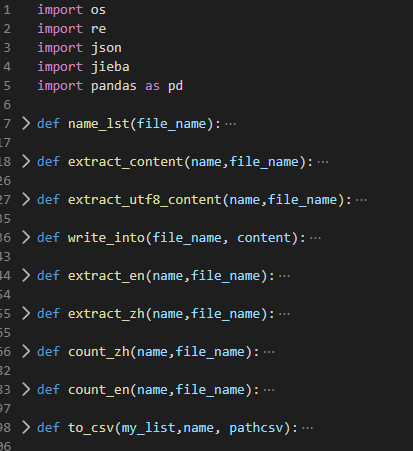

- 技术路线
提取中文和英文 | os操作 |
对中文进行分词 | os操作 jieba分词 |
对中文文本和英文文本进行计数 | count |
导出为csv文件 | csv |
- 函数
lib.py中的各种功能函数

name_lst | 传入文件夹名称，读取文件夹下所有文件的文件名，制作文件名列表 | |
extract_content | 读取文件内容，针对ANSI格式文本（原文本就是ANSI格式） | |
extract_utf8_content | 读取文件内容，针对utf-8格式文本 | |
write_into | 讲获取内容写入文件，写出时设置为utf-8编码 | |
extract_en | 利用extract_content抓取文件内容之后，提取所有英文。 并创建文件，将内容导入文件中 | |
extract_zh | 内容同上 | |
count_en | 进行词频统计 思路：统计词频——生成文件——return（词，词频）list | |
count_zh | 使用结巴分词并进行词频统计 思路：分词——生成分词文件——统计词频——生成文件——return（词，词频）list | 针对处理好的中文文本进行分词测试经过精确模式、全模式、搜索模式测试后，选择采用全模式：   为使得代码更加简洁，沿用读取、生成文件夹下文件的函数。但多次尝试，仅生成了空文件夹。  经过调试后发现，无法读取文件内容。查询了open()函数详细解析发现，即使文件采用utf-8编码，在读写文件时常常仍需指定编码方式encoding='utf-8'。  测试文件统计词频，得到元组数据(‘词’,词频)组成的list类型li。通过将list类型转换成str，将li写入文件。  |
Read | 将上述函数连接起来 主要涉及到一些os操作，需要注意函数运行当时所处的文件 | |
to_csv | 保存成为csv文件，输出为csv编码 | 函数需要输入一个list，导出csv文件。所以先自行简单写了几行代码来实现将list导出保存成csv文件的功能： 进行测试：   |
main.py主函数

Read |  | 注意异常处理 注意os操作以及读取文件的函数的选取（源文件编码并非utf-8） |
CountZh |  | 中文词频统计 |
CountEn |  | 英文词频统计 |
main |  | 采用魔法方法 |
- 难点
Q1：为什么要有两种读取文本的方法？
对于编码的处理：文件格式不一样，要采用不同的文件读取方法
Q2：为什么计数之后还要再生成文件，同时还要返回一个list？
生成文件是为了能够保存结果
而返回list的原因如下：
拿到另外两位同学的代码以后，我把自己的代码加了进去，却发现读取到的数据并不能进行to_csv操作，后面发现是因为在我提取文件内容时，f.read()返回的结果是字符串并不是list。

虽然查询过后也有别的读取文件函数可以返回list，但看代码发现前面的同学分词的结果是以list存储的，只不过写入文件后得到的是字符串类型，所以只要将分词和计算词频的函数的返回值改成list，再直接将这两个函数的返回值作为to_csv函数的输入值即可。